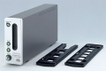
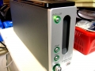

器材库 > 底片扫描仪 > DiMAGE Scan Elite 5400

详细规格
发布日期
2003-04-08
可支持的胶片格式
35mm：彩色/黑白 负片/正片
扫描元件
RGB 3-线CCD 5300像素 / 线
光源
三波，冷阴极荧光管
光学分辨率
5400dpi
扫描模式
移动胶片 固定传感器 单次扫描
扫描位深
A/D转换：16位；输出：每色彩通道各为16位或8位
扫描速度
[USB 2.0]60秒 [IEEE 1394]68秒 （在Windows下）
略图扫描速度
[USB 2.0]10秒 [IEEE 1394]10秒 （在Windows下）
有效扫描区域
24.61 x 36.69 mm
对焦
自动对焦, 手动对焦
接口
USB 2.0 / IEEE 1394
电源要求
200-240V AC，50/60 Hz
尺寸
65 x 165 x 360mm
重量
2.5kg
markk2009-07-16 16:555 分
操作性 5.00功能性 5.00美观性 5.00趣味性 5.00耐用性 5.00性价比 5.00解像力 5.00色彩还原 5.00
tommyjiang2008-12-14 14:293.94 分
操作性 4.00功能性 4.00美观性 4.50趣味性 4.50耐用性 4.00性价比 3.50解像力 4.00色彩还原 3.00
hosen1682007-02-07 20:454.5 分
操作性 4.50功能性 4.50美观性 4.50趣味性 4.50耐用性 4.50性价比 4.50解像力 4.50色彩还原 4.50
半天云11072006-11-28 19:094.81 分
操作性 4.50功能性 5.00美观性 5.00趣味性 5.00耐用性 4.50性价比 4.50解像力 5.00色彩还原 5.00
li_suny2006-05-30 20:144.56 分
操作性 4.50功能性 4.50美观性 5.00趣味性 4.50耐用性 4.50性价比 4.50解像力 4.50色彩还原 4.50
告诉我密码！2005-07-27 15:59
cnbc2005-07-19 10:274.63 分
操作性 4.50功能性 5.00美观性 4.50趣味性 4.00耐用性 5.00性价比 4.50解像力 5.00色彩还原 4.50

告诉我密码！2005-03-31 23:114.81 分
操作性 4.00功能性 5.00美观性 5.00趣味性 5.00耐用性 4.50性价比 5.00解像力 5.00色彩还原 5.00
sc2012004-05-08 12:313.56 分
操作性 4.00功能性 4.00美观性 5.00趣味性 2.50耐用性 2.00性价比 4.50解像力 3.50色彩还原 3.00
darwinz2004-03-24 08:423.88 分
操作性 4.00功能性 4.00美观性 4.50趣味性 3.00耐用性 3.50性价比 4.00解像力 4.50色彩还原 3.50
产品图 / 样片
美能达 DiMAGE Scan Elite 5400